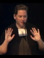
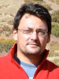

Program
iEvoBio features several traditional elements, including a keynote presentation at the beginning of each day and contributed full talks in the morning, as well as more dynamic and interactive elements, including a challenge, lightning talk-style sessions, a software bazaar, and Birds-of-a-Feather gatherings. A detailed program schedule is available below. Slides are archived at Slideshare.
Confirmed keynote speakers:

Dawn Field, (UK National Environmental Research Center)
Dawn Field is the Head of the Molecular Evolution and Bioinformatics Group at the NERC Centre for Ecology and Hydrology where her group undertakes research in comparative microbial genomics and microbial diversity using bioinformatic approaches and next-generation sequencing technologies. She is a founder of the Genomic Standards Consortium (GSC, http://gensc.org) and its open-access journal (SIGS, http://standardsingenomics.org). She is also a founder of Minimum Information about a Biological or Biomedical Investigation initiative (MIBBI, http://mibbi.org), the Environment Ontology (http://environmentontology.org) and the BioSharing community (http://biosharing.org) and an active member of a variety of other data standards and ontology efforts. She is also the Director of the NERC Environmental Bioinformatics Centre (NEBC) and the NERC Biomolecular Analysis Facility (NBAF-Oxford) bioinformatics node (http://nebc.nox.ac.uk).

Claudio Silva, (University of Utah).
Claudio Silva is currently a full professor of computer science at the University of Utah (later in 2011, he will be joining NYU's Polytechnic Institute). Before joining Utah in 2003, he has held positions at industrial and government labs (IBM, AT&T, Sandia, LLNL) where he has led a number of research and development efforts. He has coauthored 170 publications, served on 80 international program committees and five editorial boards, and chaired or organized a number of major conferences, including the IEEE Visualization conference. His research focus on visualization, scientific data management, geometry processing, and related areas. The techniques and software that his group has developed are used throughout the world in both academic and industrial settings. His work received academic and industrial awards. In particular, he received IBM Faculty Awards in 2005, 2006, and 2007, and best paper awards at IEEE Visualization 2007, IEEE Shape Modeling International 2008 and the 2010 Eurographics Educator Program. In 2009, the VisTrails Provenance Plugin for Autodesk Maya received an Utah Innovation Award. His work is funded by grants from the NSF, NIH, DOE, IBM, and ExxonMobil.
The Call for Abstracts for Full Talks was open from Feb 16 to March 25 and is now closed. The Call for Lightning Talks opened on April 29, and the Call for Software Bazaar entries on May 21. Both closed on the first day of the conference (June 21). The Call for Birds-of-a-Feather gatherings remains open until the start of the respective session on June 22. See below for important dates. To stay up-to-date, subscribe to our announcement mailing list and Twitter channel.
Special Session on Metagenomics, Barcoding, and Biodiversity
In 2011 iEvoBio features a special focus session on metagenomics, barcoding, and biodiversity and the challenges that these new approaches raise for evolutionary informaticians. We now have over 6000 genomes and vast quantities of metagenomic sequences in the public domain, primarily from bacteria and archaea from many habitats. Various short sequences (e.g. barcodes) for quick identification of eukaryotes are emerging. The availability of this sequence data and ever-cheaper methods for producing it offer exciting opportunities for understanding molecular evolution and biodiversity. However, the data are growing faster than the infrastructure to support it. Thus there are informatics challenges for visualizing, analyzing, interpreting, and managing the data and the results from it. Moreover, the eukaryotic and microbial informatics communities have independent histories and approaches so synergy is not easy.
These challenges typify the intersection of fields that are the scope of iEvoBio. Speakers in this special session of iEvoBio will present their work and participate in a panel discussion. We invited 4 speakers to this session: Neil Davies (Moorea Biocode project), Linda Amarral-Zettler (Marine Biological Laboratory Woods Hole), Holly Bik (Hubbard Center for Genome Studies, University of New Hampshire), and David Schindel (Barcode of Life, and Smithsonian Institution). After the talks, there will be an open panel discussion with all the speakers, including keynote speaker Dawn Field (Center for Ecology and Hydrology at Oxford). We encourage you to attend this special session and participate in what we think will be a remarkably fruitful meeting.
Open Source Commitment
iEvoBio and its sponsors are dedicated to promoting the practice and philosophy of Open Source software development and reuse within the research community. For this reason, if a submitted talk concerns a specific software system for use by the research community, that software must be licensed with a recognized Open Source License, and be available for download, including source code, by a tar/zip file accessed through ftp/http or through a widely used version control system like cvs, Subversion, git, Bazaar, or Mercurial.
Program Schedule
The abstracts of all full talk and lightning talk presentations are preliminarily available at the manuscript submission system. Final abstracts are also permanently archived in the iEvoBio 2011 collection at Nature Precedings. Slides are archived at Slideshare (instructions for authors).
Important Dates
- February 1, 2011: Registration opens. Call for Challenge submissions opens.
- February 16, 2011: Call for Abstracts for Full Talks opens.
- March 25, 2011: Call for Abstract for Full Talks closes.
- April 29, 2011: Call for Lightning Talks opens.
- May 21: Call for Software Bazaar submissions opens.
- June 10, 2011: Call for Birds-of-a-Feather gatherings posted.
- June 17, 2011: Evolution 2011 conference begins.
- June 20, 2011: Deadline for submitting Challenge entries.
- June 21, 2011: Deadline for submitting Lightning Talks and Software Bazaar entries (unless space fills up earlier).
- June 21 + 22, 2011: iEvoBio 2011 conference takes place.
- June 22, 2011: Deadline for Birds-of-a-Feather gatherings.